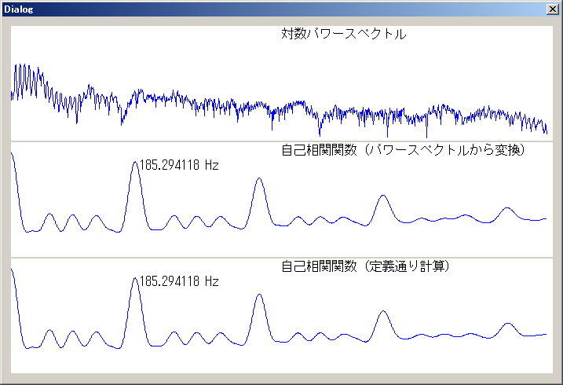
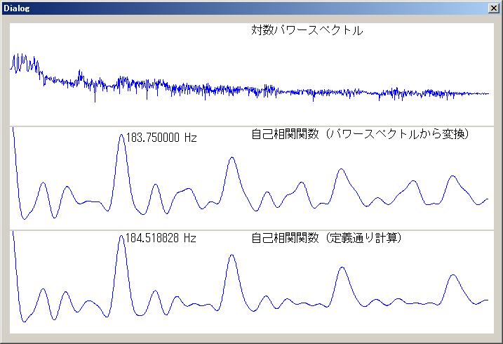

更新日時：2010/5/3
C/C++言語で自己相関関数(ACF)により基本周波数解析を行うサンプルプログラムです。
解析対象の音声ファイルは、ケプストラム法との比較のためここで公開されているa.wavを使用しました。
サンプルのため、対応しているwavファイルのフォーマットは、チャンネル数がモノラルで、ビット／サンプルが32bitのみです。
また、FFTのソースは、ここのソースを使用しています。
自己相関関数の定義は、r(m) = Σ[n=0..N-m-1] f(n)・f(n+m) (0 <= m <=
N-1)で与えられます。これを定義どおり計算するより高速な方法として、FFTにより得られたパワースペクトルを逆FFTすることによっても自己相関関数を得ることができます。（ウィナー・ヒンチンの定理）
サンプルプログラムでは2つの方法で、自己相関関数を求めてそれらの結果の比較を行っています。また、実行速度の比較も行っています。実行速度の比較用のソースはこちらにあります。
実行結果は、下図のようになります。

実行結果
パワースペクトルの逆FFTから求めた自己相関関数と、定義通り計算した自己相関関数でまったく同じ基本周波数が算出されました。
ケプストラム法により算出した基本周波数とも一致しています。
次に、実行時間を比較した結果は、以下のとおりです。
実行時間(1,000回実行時、FFT次数2048、Core2Quad 2.8GHzで測定)
| パワースペクトルの逆FFTから計算 |
15 ms |
| 定義通り計算 |
3,563 ms |
パワースペクトルの逆FFTから計算した方が、約 238 倍早く計算できています。
窓関数を使用しないで自己相関関数を計算した場合、基本周波数の算出ができるか確認しました。結果は下図の通りです。

窓関数なしの実行結果
窓関数を適用しなくても、ある程度正しい結果が算出できました。自己相関関数による方法はケプストラム法と比較して、窓関数はそれほど重要ではないようです。それでも、窓関数を使用した法が、より正しい結果が得られています。
HANDLE hFile = CreateFile(L"a.wav", GENERIC_READ, FILE_SHARE_READ, NULL, OPEN_EXISTING, 0, NULL);
RiffHeader header;
DWORD readsize;
ReadFile(hFile, &header, sizeof(header), &readsize, NULL);
FormatChunk fmt;
ReadFile(hFile, &fmt, sizeof(fmt), &readsize, NULL);
int Fs = fmt.dwSamplesPerSec;
DataChunk data;
ReadFile(hFile, &data, sizeof(data), &readsize, NULL);
DWORD wav_length = data.chunkSize/sizeof(float);
float *wav = new float[wav_length];
ReadFile(hFile, wav, data.chunkSize, &readsize, NULL);
int center = wav_length/2; // 中心のサンプル番号
double cuttime = 0.046440; // 切り出す長さ[s]
int wavdata_length = int(cuttime/2*Fs)*2;
double *wavdata = new double[fftsize];
double *wavdata2 = new double[fftsize];
float *p_wav = wav + center - wavdata_length/2 - 1;
for (int i = 0; i < fftsize; ++i, ++p_wav)
{
// ハニング窓
wavdata[i] = han_window(i, wavdata_length) * double(*p_wav);
wavdata2[i] = wavdata[i]; // コピーを保持
}
rdft(fftsize, 1, wavdata, ip, w); // 離散フーリエ変換
double Pdft[fftsize/2+1]; // パワースペクトル
Pdft[0] = power(wavdata[0], 0);;
Pdft[fftsize/2] = power(wavdata[1], 0);
for (int i = 1; i < fftsize/2; ++i)
{
Pdft[i] = power(wavdata[i*2], wavdata[i*2+1]);
}
// パワースペクトルから自己相関関数に変換
double *acf = new double [fftsize];
for (int i = 0; i < fftsize/2; ++i)
{
acf[i*2] = Pdft[i];
acf[i*2+1] = 0.0;
}
acf[1] = Pdft[fftsize/2];
rdft(fftsize, -1, acf, ip, w); // 逆フーリエ変換
for (int i = 0; i < fftsize/2; ++i)
{
acf[i] *= 2.0 / fftsize;
}
// 基本周波数に変換
int max_n = find_peak(acf, fftsize/2);
double peakQuefrency = 1.0 / Fs * max_n;
double f0 = 1.0 / peakQuefrency;
// 自己相関関数を計算
double *acf2 = new double[fftsize];
ZeroMemory(acf2, sizeof(double)*fftsize);
for (int m = 0; m < fftsize; ++m)
{
for (int n = 0; n < fftsize - m; ++n)
{
acf2[m] += wavdata2[n] * wavdata2[n+m];
}
}
// 基本周波数に変換
max_n = find_peak(acf2, fftsize/2);
peakQuefrency = 1.0 / Fs * max_n;
f0 = 1.0 / peakQuefrency;